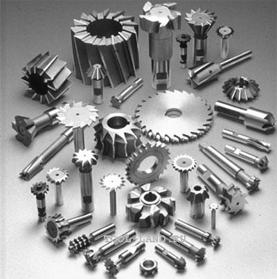

Фрези торцеві та другоеФрезы торцевые и другое
Клейма цифра 4 мм раскомплектованные "0" твердосплавні Ситомо СССРКлейма цифра 4 мм раскомплектованные "0" твердосплавные Ситомо СССР
ОписОписание
Клейма цифра 4 мм раскомплектованные "0" твердосплавні Ситомо СССР — професійний металорізальний інструмент для фрезерування пазів, уступів, контурів і кишень. Виробник: СРСР. Інструмент перевірений і готовий до відвантаження. В наявності 1 шт. на складі у Харкові. Ціна 150 грн без ПДВ. Опт і роздріб, відправлення по всій Україні. Замовлення від 2 000 грн.Клейма цифра 4 мм раскомплектованные "0" твердосплавные Ситомо СССР — профессиональный металлорежущий инструмент для фрезерования пазов, уступов, контуров и карманов. Производитель: СССР. Инструмент проверен и готов к отгрузке. В наличии 1 шт. на складе в Харькове. Цена 150 грн без НДС. Опт и розница, отправка по всей Украине. Заказ от 2 000 грн.
ХарактеристикиХарактеристики
| Тип інструментуТип инструмента | Фреза кінцеваФреза концевая |
|---|---|
| КатегоріяКатегория | Фрези торцеві та другоеФрезы торцевые и другое |
| КраїнаСтрана | СРСРСССР |
| СтанСостояние | новийновый |
| Код товаруКод товара | FLK-11713FLK-11713 |
| НаявністьНаличие | 1 шт.1 шт. |